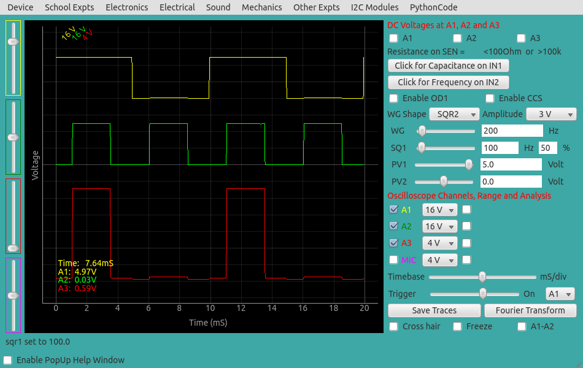

Study of Logic gates
The 5 volt DC power for the IC (74LS08) can be taken from the +5V socket
or from OD1 (need to enable OD1). The inputs are connected to the square
waves SQ1 and SQ2. The wave generator WG should be set to SQ2 option. The
output is connected to A3 (via a series resistor because the range of A3
is 3.3 volts only). The voltage ranges of A1 and A2 are set to 16 volts
and they are shifted for a clear view, by avoiding overlapping of traces.

|
 |
| Wiring Diagram |
Photograph of the experimental setup |
The yellow and green traces are inputs and red is the output. It can be seen
that the output is HIGH only when both the inputs are HIGH.

|
| Screen shot of the input and output signals for an AND gate
(74LS74) |
AND Gate using Diodes
The AND gate can be implemented using two diodes, as shown in the figure
below. If any of the inputs goes LOW, the diode conducts and the voltage at
the junction goes LOW.

|

|
| Wiring Diagram |
Photograph of the setup |
|  |
| Screen shot of the AND gate implemented using two diodes (1N4148) |
OR Gate
The waveforms for the 74LS32 OR gate is also shown below. The ICs are
pin compatible, you only need to replace the IC. The

OR Gate using Diodes
The OR gate can be implemented as shown below. If any of the inputs
goes HIGH the output becomes HIGH.

|
 |
| wiring diagram |
Photograph of the setup |

|
| Screenshot of the OR gate implemented using two diodes. |